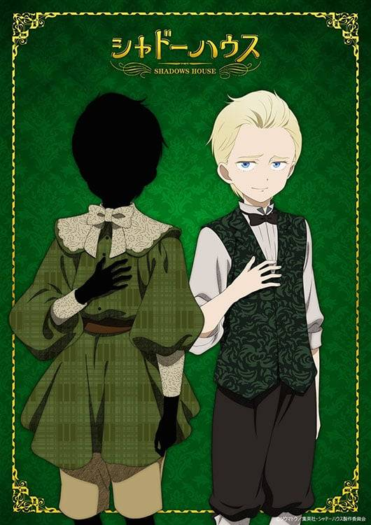

帕利克（パトリック，聲：川島零士）
影家人，利奇的主人。穿著綠色西裝。個性纖細又傲嬌，表面上擁有非常高的自尊心且不在乎他人，並試圖扮演一個符合規矩的影家人，但實際上很有正義感，一切都是有感自己軟弱的武裝。做事經常沒有自信而常常依賴利奇。在正式露面時喜歡上身為活人偶的艾蜜莉可，並因此萌生對花朵的興趣，目前在溫室有自己種花的空間。說話有時會結巴。
黑灰量少，且尚未覺醒黑灰能力，並對於自己沒有黑灰能力感到相當自卑。在無能力者狩獵事件被襲擊。
利奇（リッキー，聲：川島零士）
活人偶，帕利克的僕人，留有金髮油頭。總是充滿自信且強勢，散發出貴族少爺的氣質，會幫助並指示帕利克做出行動，但強勢的個性是有感自己脆弱的武裝。十分重視自己的主人，曾建議帕利克追求露薏絲以提升地位。和尚恩同一班，但彼此水火不容。一開始極力討好戴星組而被帶星人偶形容為有前途的新人，但實際上重情重義。在正式露面和露一起行動後開始對露有好感。
人類時期的名字是帕利克，影宅的領地「鏡邊村」出身，和尚恩、露、拉姆是同學，且在當時就對露有好感。當時瀏海是放下的，進入影宅前為了給選拔官好印象而把瀏海往上梳。有一個姐姐。
回到主頁